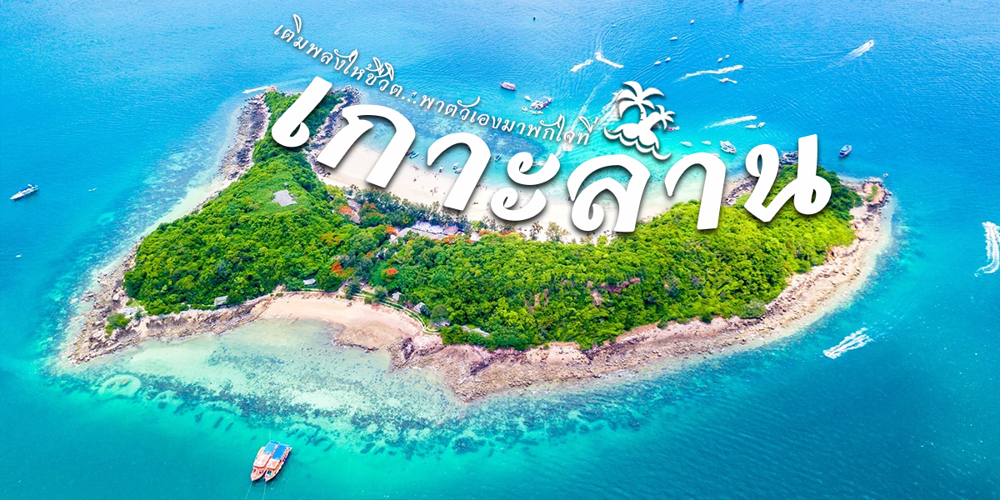
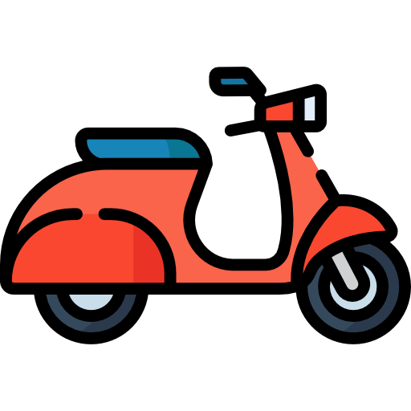
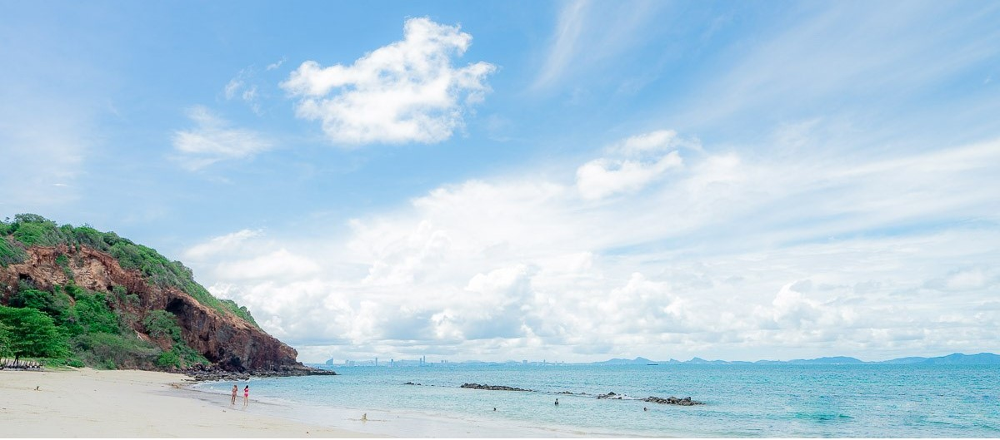
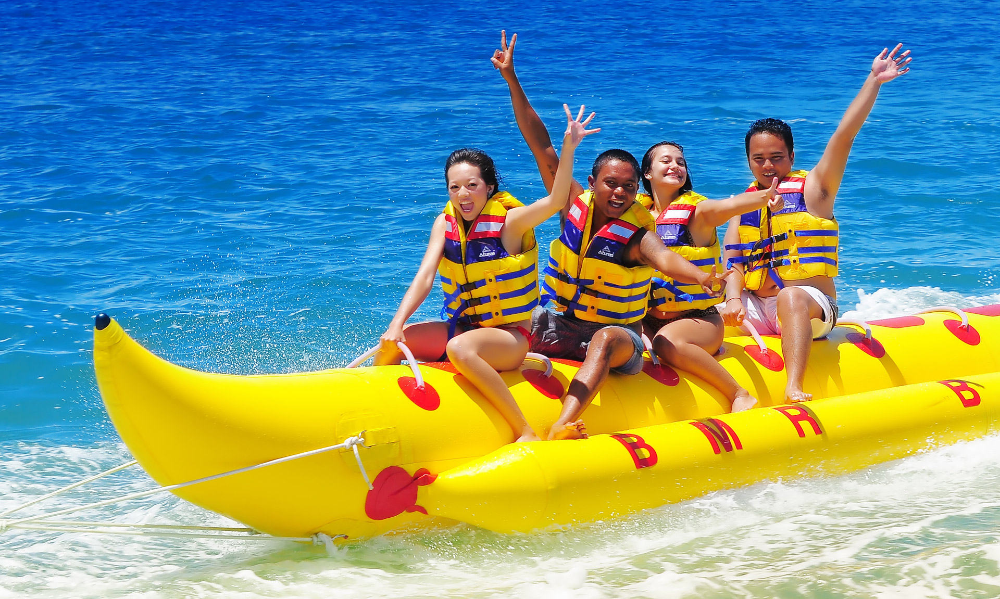

เกาะล้าน
เป็นหนึ่งในจุดหมายปลายทางยอดนิยมของนักท่องเที่ยวทั้งชาวไทยและต่างชาติ
ตั้งอยู่ห่างจากชายฝั่งเมืองพัทยาเพียง 7 กิโลเมตร ด้วยความงดงามของธรรมชาติ น้ำทะเลใสสะอาด
หาดทรายขาวละเอียดและกิจกรรมหลากหลายเกาะล้านจึงเป็นสถานที่ที่เหมาะสำหรับการพักผ่อนและการผจญภัยกลางทะเล

ที่พักบนเกาะล้าน
ที่พักบนเกาะล้านมีให้เลือกหลากหลายสไตล์ ไม่ว่าจะเป็นรีสอร์ตสุดหรูติดทะเล บังกะโลบรรยากาศอบอุ่น หรือโฮมสเตย์ราคาประหยัด นักท่องเที่ยวสามารถเลือกที่พักตามความต้องการ ไม่ว่าจะเป็นที่พักสำหรับการพักผ่อนแบบส่วนตัว ที่พักใกล้ชายหาดสำหรับชมวิวพระอาทิตย์ตก หรือที่พักในตัวหมู่บ้านที่สะดวกต่อการเดินทางไปยังร้านอาหารและท่าเรือ
1. ที่พักเกาะล้านรีสอร์ท
NAIA Resort Koh Larn : รีสอร์ทที่ตั้งอยู่ริมชายหาด มอบความเป็นส่วนตัวและความเงียบสงบ เหมาะสำหรับผู้ที่ต้องการการพักผ่อนอย่างแท้จริง พร้อมสิ่งอำนวยความสะดวกครบครันและวิวทะเลที่งดงาม

2. ที่พักสไตล์มินิมอล
Kamari Cafe & Resort Kohlarn : ที่พักสุดเก๋ในสไตล์มินิมอลที่ได้รับแรงบันดาลใจจากซานโตรินี มีสระว่ายน้ำส่วนตัวและคาเฟ่ในตัว เหมาะสำหรับผู้ที่ชื่นชอบบรรยากาศเรียบง่ายแต่มีสไตล์
3. ที่พักติดชายหาด
Tiennara Koh Larn Resort : ที่พักเพียงแห่งเดียวบนหาดเทียน ให้คุณสัมผัสบรรยากาศทะเลได้อย่างใกล้ชิด เพียงไม่กี่ก้าวจากหน้าห้องพักก็สามารถเดินลงทะเลได้เลย เหมาะสำหรับผู้ที่รักธรรมชาติและความสงบ
4. พูลวิลล่า
วิราวัน พูล รีสอร์ท เกาะล้าน : พูลวิลล่าหรูที่มอบความเป็นส่วนตัวสูงสุด เหมาะสำหรับการพักผ่อนกับครอบครัวหรือคู่รัก มีสระว่ายน้ำส่วนตัวและบรรยากาศเงียบสงบ ให้คุณดื่มด่ำกับความหรูหราท่ามกลางธรรมชาติ
ร้านอารหารบนเกาะล้าน
ที่พักบนเกาะล้านมีให้เลือกหลากหลายสไตล์ ไม่ว่าจะเป็นรีสอร์ตสุดหรูติดทะเล บังกะโลบรรยากาศอบอุ่น หรือโฮมสเตย์ราคาประหยัด นักท่องเที่ยวสามารถเลือกที่พักตามความต้องการ ไม่ว่าจะเป็นที่พักสำหรับการพักผ่อนแบบส่วนตัว ที่พักใกล้ชายหาดสำหรับชมวิวพระอาทิตย์ตก หรือที่พักในตัวหมู่บ้านที่สะดวกต่อการเดินทางไปยังร้านอาหารและท่าเรือ
1. ร้านอาหารทะเลสด : ป้าสร้อย ซีฟู้ด
หากพูดถึงอาหารทะเลสดบนเกาะล้าน "ป้าสร้อย ซีฟู้ด" เป็นหนึ่งในร้านยอดนิยมที่ต้องลอง! ร้านนี้ขึ้นชื่อเรื่องความสดของวัตถุดิบ ไม่ว่าจะเป็นกุ้ง หอย ปู ปลา ที่จับขึ้นจากทะเลใหม่ๆ ทุกวัน รสชาติจัดจ้านตามสไตล์อาหารไทยแท้ เสิร์ฟพร้อมน้ำจิ้มซีฟู้ดสูตรเด็ด บรรยากาศร้านติดทะเล ลมพัดเย็นสบาย เหมาะสำหรับคนที่อยากลิ้มรสซีฟู้ดแท้ๆ
2. คาเฟ่บรรยากาศดี : Maharak Café
เป็นคาเฟ่สุดชิลล์ริมทะเลที่ได้รับความนิยมจากนักท่องเที่ยว ด้วยวิวทะเลที่สวยงาม และบรรยากาศสุดโรแมนติก เหมาะสำหรับการนั่งพักผ่อนพร้อมจิบกาแฟหอมๆ เมนูที่แนะนำคือเครื่องดื่มแนวสดชื่น เช่น มะนาวโซดา และของหวานโฮมเมดที่ตกแต่งอย่างสวยงาม มุมถ่ายรูปในร้านก็น่ารัก มีทั้งโซนนั่งชิลล์รับลมทะเลและมุมฮิปๆ ให้เลือกนั่ง
3. ร้านอาหารติดชายหาด : ครัวเฉลียงลม
เป็นร้านอาหารริมทะเลที่มาพร้อมกับวิวชายหาดสุดตระการตา จุดเด่นของร้านคือที่นั่งรับลมทะเล ฟังเสียงคลื่น พร้อมดื่มด่ำกับอาหารอร่อยๆ มีทั้งเมนูซีฟู้ดสดใหม่ และเมนูนานาชาติที่รสชาติเข้ากันได้ดี เช่น สเต๊กปลาแซลมอน และสปาเก็ตตี้ขี้เมาทะเล ที่นี่เหมาะสำหรับคนที่อยากใช้เวลาพักผ่อนริมทะเลไปพร้อมกับอาหารอร่อยและมุมถ่ายรูปสวยๆ
4. ร้านนั่งดื่มชิลล์บนเกาะล้าน : One-More Koh Larn
เป็นร้านนั่งดื่มยอดฮิตที่เหมาะสำหรับสายปาร์ตี้และคนที่อยากนั่งชิลล์ในบรรยากาศสนุกๆ ร้านนี้มีเครื่องดื่มหลากหลาย ไม่ว่าจะเป็นเบียร์เย็นๆ ค็อกเทลสูตรพิเศษ และเหล้าหลากชนิดให้เลือก เมนูอาหารก็มีให้บริการทั้งกับแกล้มและอาหารจานหลักบรรยากาศของร้านเป็นแนวชิลล์ๆ แต่ก็สามารถสนุกไปกับดนตรีสดและดีเจที่มาสร้างสีสันในช่วงค่ำ ใครที่กำลังมองหาสถานที่นั่งดื่มแบบไม่เงียบเหงา ได้เจอเพื่อนใหม่ๆ และสนุกไปกับบรรยากาศแสงสีของเกาะล้าน One-More Koh Larn เป็นตัวเลือกที่ไม่ควรพลาด!

การเดินทาง
การเดินทางจากแหลมบาลีฮายในเมืองพัทยา จังหวัดชลบุรี ซึ่งเป็นจุดออกเรือหลักไปยังเกาะล้าน สามารถทำได้จากท่าเรือพัทยาใต้ ที่ตั้งอยู่ใกล้กับบริเวณแหลมบาลีฮาย โดยท่าเรือพัทยาใต้จะเป็นจุดสำคัญที่เชื่อมต่อการเดินทางไปยังเกาะล้าน
เรือโดยสาร
30 บาท / คน
เดินทางโดยประมาณ 25-30 นาที
สปีดโบ๊ท
200-300 บาท / คน
เดินทางโดยประมาณ 20 นาที
เมื่อเดินทางมาถึงเกาะล้านแล้ว คุณจะพบว่ามีหลายวิธีในการเดินทางภายในเกาะเพื่อความสะดวกสบายและสนุกสนาน คุณสามารถเลือกใช้บริการต่างๆ ตามความสะดวก เช่น การเช่ามอเตอร์ไซค์หรือจักรยาน เพื่อการเดินทางที่รวดเร็วและสะดวก หรือเลือกใช้บริการรถสองแถวที่วิ่งตามเส้นทางต่างๆ รอบเกาะ ซึ่งเหมาะสำหรับกลุ่มที่ต้องการความสะดวกสบายในการเดินทางและอยากประหยัดค่าใช้จ่าย นอกจากนี้ยังมีบริการรถรับส่งจากท่าเรือไปยังหาดต่างๆ ให้เลือกอีกด้วย การเดินทางบนเกาะล้านจึงเป็นเรื่องง่ายและสะดวกตามความต้องการของแต่ละคน
มอเตอร์ไซต์เช่า
300-500 บาท / วัน

มอเตอร์ไซต์รับจ้าง
50-100 / เที่ยว
รถสองแถว
20 บาท / คน
การเดินทางบนเกาะล้านมีตัวเลือกหลากหลาย ทั้งการเช่ามอเตอร์ไซค์ การใช้มอเตอร์ไซค์รับจ้าง รถสองแถว เลือกวิธีการเดินทางที่เหมาะสมกับความต้องการและงบประมาณของคุณ เพื่อให้การเที่ยวเกาะล้านเป็นประสบการณ์ที่สนุกและน่าจดจำ!
หาดบนเกาะล้าน
เกาะล้านเต็มไปด้วยชายหาดที่เหมาะสำหรับการพักผ่อนและทำกิจกรรมต่างๆ มาดูกันว่าหาดที่น่าสนใจบนเกาะล้านมีอะไรบ้าง!
1. หาดตาแหวน
หาดยอดนิยมที่สุดบนเกาะล้าน เพราะอยู่ใกล้ท่าเรือและมีบรรยากาศคึกคัก น้ำทะเลสีฟ้าใสตัดกับหาดทรายขาวสะอาด เหมาะสำหรับผู้ที่ชื่นชอบกิจกรรมทางน้ำ เช่น เจ็ตสกี บานาน่าโบ๊ท หรือดำน้ำดูปะการัง ใครที่ชอบบรรยากาศครึกครื้นต้องไม่พลาดหาดนี้!
2. หาดสังวาลย์
หาดเล็กๆที่อยู่ไม่ไกลจากหาดตาแหวน แต่เงียบสงบและเป็นส่วนตัวกว่าไฮไลต์ของที่นี่คือสะพานไม้ที่ทอดยาวลงสู่ทะเล สถานที่ถ่ายรูปสุดโรแมนติกที่หลายคนหลงรักเหมาะสำหรับคู่รักหรือผู้ที่มองหามุมพักผ่อนแบบเงียบสงบ
3. หาดทองหลาง
สำหรับคนรักการดำน้ำ หาดทองหลางคือสวรรค์ เพราะน้ำทะเลใสมากและเต็มไปด้วยปะการังและปลาสีสันสวยงาม เหมาะกับการดำน้ำชมธรรมชาติใต้ทะเล ใครที่อยากสัมผัสโลกใต้ทะเลแบบใกล้ชิด ไม่ควรพลาด!
4. หาดเทียน
หากคุณกำลังมองหาหาดที่เงียบสงบและเต็มไปด้วยธรรมชาติ หาดเทียนจะตอบโจทย์คุณได้อย่างดี ด้วยความยาวของหาดและต้นไม้ที่ร่มรื่น ให้ความรู้สึกเหมือนมีหาดส่วนตัว เหมาะสำหรับการเดินเล่นหรือนั่งอ่านหนังสือริมหาด
5. หาดนวล
หาดที่ยังคงความเป็นธรรมชาติและมีผู้คนไม่พลุกพล่าน เหมาะสำหรับผู้ที่ต้องการความสงบและหลีกหนีความวุ่นวาย น้ำทะเลบริเวณนี้ใสสะอาดและบรรยากาศเงียบสงบ เป็นที่นิยมของผู้ที่รักความเป็นส่วนตัว
6. หาดแสม
หาดที่มีบรรยากาศร่มรื่นและเป็นธรรมชาติ ด้วยพื้นที่กว้างขวางและต้นไม้มากมาย น้ำทะเลสีฟ้าใสเหมาะสำหรับการว่ายน้ำหรือพายเรือคายัค หากคุณต้องการหลีกหนีแสงแดดแรงๆ หาดแสมคือตัวเลือกที่ดี!
กิจกรรมบนเกาะล้าน
เกาะล้านไม่เพียงแค่มีชายหาดที่สวยงามและน้ำทะเลใสสะอาดเท่านั้น แต่ยังมีกิจกรรมหลากหลายที่รอให้คุณได้สัมผัส ไม่ว่าคุณจะเป็นสายผจญภัยหรือสายชิลล์ เกาะล้านก็มีกิจกรรมที่เหมาะสำหรับทุกคน มาดูกันว่ากิจกรรมยอดนิยมบนเกาะล้านมีอะไรบ้าง!
1. จุดชมวิว
บรรยากาศของพระอาทิตย์ตกบนเกาะล้านเป็นสิ่งที่คุณไม่ควรพลาด จุดชมพระอาทิตย์ตกที่สวยที่สุด ได้แก่ หาดแสม และจุดชมวิวเขาหน้ายักษ์
จุดชมวิวหาดแสม หรือ จุดชมวิวเขานม
เป็นสถานที่ที่นักท่องเที่ยวสามารถชมวิวทิวทัศน์ของหาดแสมและบริเวณโดยรอบได้อย่างงดงาม จากจุดนี้ คุณจะได้เห็นน้ำทะเลสีฟ้าใส หาดทรายขาว และทิวทัศน์ของกังหันลมที่ตั้งอยู่บนเนินเขา ซึ่งเป็นสัญลักษณ์ที่โดดเด่นของพื้นที่นี้
จุดชมวิวเขาหน้ายักษ์
เป็นสถานที่ที่นักท่องเที่ยวสามารถชมวิวทะเลและพระอาทิตย์ตกดินได้อย่างงดงาม การเดินทางไปยังผาหน้ายักษ์สามารถทำได้โดยใช้เส้นทางเดียวกับทางไปหาดนวล เมื่อขับรถไปทางหาดนวล ให้สังเกตด้านขวามือ จะมีทางเข้าที่สามารถขับเข้าไปจนสุดและจอดรถได้ จากนั้นเดินเท้าต่อไปยังจุดชมวิว
2. ตกหมึก
กิจกรรมตกหมึกเป็นที่นิยมสำหรับนักท่องเที่ยวที่มาเยือนเกาะล้าน โดยเฉพาะในช่วงเย็นจนถึงค่ำ เมื่อหมึกออกหากินและแสงไฟจากเรือช่วยดึงดูดหมึกขึ้นมาใกล้ผิวน้ำ
- เวลาให้บริการ: ช่วงเย็นตั้งแต่ประมาณ 18:00 น. ถึง 22:00 น.
- ราคา : เริ่มต้นที่ 400 บาทต่อคน (รวมอุปกรณ์และบริการ)
3. ขับเจ็ตสกี
นักท่องเที่ยวสามารถสนุกสนานกับการขับเจ็ตสกีท่ามกลางวิวทะเลสวยๆ รอบเกาะ จุดที่เหมาะสำหรับขับเจ็ตสกี ได้แก่ หาดตาแหวนและหาดนวล ซึ่งน้ำทะเลใสและมีคลื่นที่พอเหมาะกับการขับเจ็ตสกี
4. บานาน่าโบ๊ท
เหมาะสำหรับทั้งกลุ่มเพื่อนและครอบครัว โดยผู้เล่นจะนั่งบนบานาน่าโบ๊ท ซึ่งเป็นเรือยางขนาดใหญ่ที่ลากด้วยเรือเร็วกลางทะเล กระแสคลื่นและการเร่งความเร็วของเรือจะทำให้บานาน่าโบ๊ทพลิกคว่ำหรือหมุนไปมาเพิ่มความสนุกและท้าทายให้กับผู้เล่น
5. ดำน้ำ
มีน้ำทะเลที่ใสและระบบนิเวศทางทะเลที่ยังคงความสมบูรณ์ มีจุดดำน้ำหลากหลายที่สามารถชมปะการังและสัตว์น้ำต่างๆ ได้อย่างใกล้ชิด จุดดำน้ำที่เป็นที่นิยมเช่น ทะเลแหวก หาดตาแหวน และหาดนวล ซึ่งเหมาะสำหรับนักดำน้ำทั้งมือใหม่และมือโปร
6. สวนน้ำกลางทะเล
กิจกรรมที่สนุกและน่าตื่นเต้นสำหรับผู้ที่ชื่นชอบการผจญภัยในน้ำ โดยจะมีการจัดตั้งแพลอยน้ำกลางทะเลที่มีเครื่องเล่นน้ำต่างๆ เช่น สไลเดอร์ ลานกระโดด และสระน้ำ ที่สามารถเล่นได้ทั้งเด็กและผู้ใหญ่ สวนน้ำแบบนี้มักตั้งอยู่ในบริเวณหาดต่างๆ ของเกาะล้าน เช่น หาดตาแหวน หาดนวล หรือหาดทองหลาง